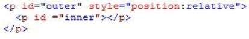

|
You are developing an HTML5 page. The page includes the following code. The inner paragraph must be exactly 15 pixels from the top left corner of the outer paragraph. You set the left style for the inner paragraph to the appropriate value. You need to set the position property of the inner paragraph. Which value should you use?
Respuesta correcta: A
Explicación: The element is positioned relative to its first positioned (not static) ancestor element. Reference: CSS position Property |